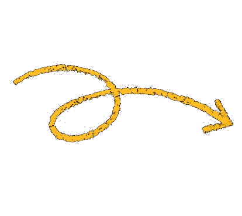
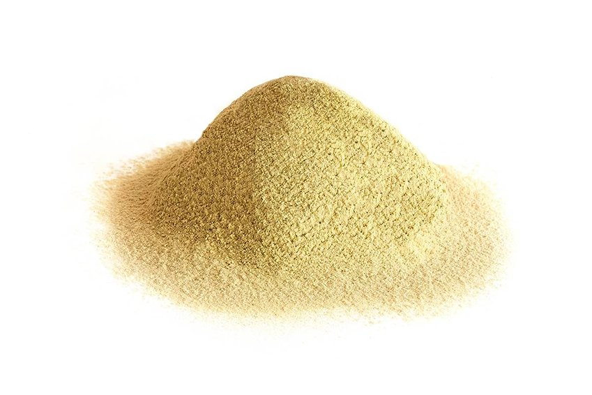

Harina de Soja Desgrasada Texturizada


Cómo se obtiene
La Harina de Soja Desgrasada Texturizada Non-GMO se obtiene de la extrusión termoplástica de harina de soja desgrasada derivada de soja (Glycine max L. Merrill) prensada mecánicamente. La extracción de aceite se realiza exclusivamente mediante prensa expeller (prensado mecánico), sin el uso de solventes químicos como el hexano, resultando en un ingrediente clean-label, libre de hexano.
Beneficios para la salud
- 45% de contenido mínimo de proteína
- Baja en sodio
- Alto en fibra dietética
- Contiene componentes bioactivos naturales (isoflavonas)
Usos
- Emulsiones cárnicas finas y productos cárnicos procesados
- Aporta cohesión, retención de agua y mejora del rendimiento de cocción
- Hamburguesas, salchichas, nuggets y embutidos
- Funcionalidad estructural sin alterar la apariencia del producto final
- Extensor proteico en formulaciones cárnicas